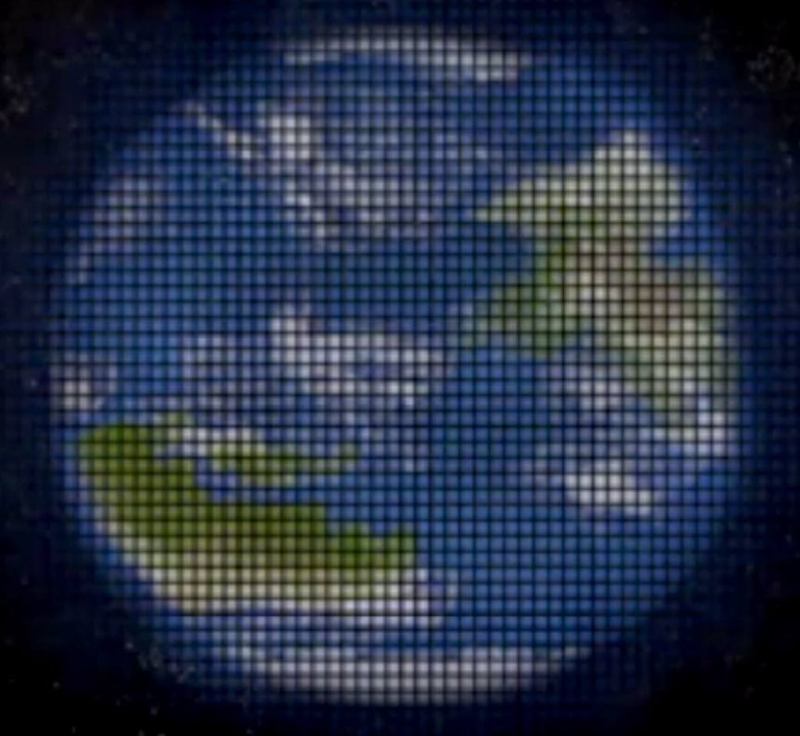

အခု အဆိုပြုတဲ့ စီမံကိန်းကို နာဆာရဲ့ Jet Propulsion Laboratory သုတေသန ဌာနက ဆလာဗာ တူရီရှက်ဗ် ဦးဆောင်တဲ့ သုတေသန အဖွဲ့က အဆိုပြု လိုက်တာ ဖြစ်ပါတယ်။ သူတို့ အဖွဲ့ဟာ ဒီ စီမံကိန်း ဖြစ်နိုင် မဖြစ်နိုင် စမ်းစစ်ဖို့ ၂၀၂၀ ခုနှစ်က နာဆာရဲ့ သုတေသန ဘတ်ဂျက် ဒေါ်လာ ၂ သန်း ရရှိခဲ့တာ ဖြစ်ပါတယ်။
နာဆာရဲ့ သုတေသန အဖွဲ့ဟာ သူတို့ရဲ့ တွေ့ရှိချက် တွေကို နက္ခတ် သုတေသန ဂျာနယ် တစ်စောင်မှာ တင်ပြ ထားပါတယ်။ ဒီ အဖွဲ့ဟာ အခု သုတေသနကို ကာလီဖိုးနီးယား အခြေစိုက် သုတေသန အဖွဲ့တစ်ခု ဖြစ်တဲ့ Aerospace Corporation နဲ့ ပူးတွဲပြီး ပြုလုပ်ခဲ့တာ ဖြစ်ပါတယ်။
သူတို့ အဆိုပြုတဲ့ စီမံကိန်းမှာ နေကို ဆွဲအား မှန်ဘီလူး တစ်ခု အနေနဲ့ အသုံးပြုမှာ ဖြစ်ပါတယ်။ ဒီ စီမံကိန်းမှာ နေအနီးက ဖြတ်လာတဲ့ အလင်းတွေ လာစုမယ့် အမှတ်မှာ ဂြိုဟ်တု အများအပြားကို လွှတ်တင်ပြီး ပုံရိပ်တွေကို ဖမ်းယူဖို့ ဖြစ်ပါတယ်။ ဒီ အလင်းလာ စုမယ့် အမှတ်ကို ရောက်ဖို့ အတွက်ကတော့ ဒီ ဂြိုဟ်တုတွေ အနေနဲ့ နှစ်ပေါင်း ၂၅ နှစ်ခန့် ခရီးနှင် ရမှာ ဖြစ်ပါတယ်။
ဒီ အလင်းလာစုမယ့် အမှတ်ကို Solar Gravitational Lens point လို့ ခေါ်ပါတယ်။ ဒီ SGL အမှတ်ဟာ အဝေးက ဂြိုဟ်ရယ်၊ နေရယ်၊ အလင်းဖမ်းမယ့် ဂြိုဟ်တုတွေရယ် မျဉ်းဖြောင့် တစ်တန်းတည်း ကျတဲ့ အမှတ်လဲ ဖြစ်ပါတယ်။
အဝေးက ဂြိုဟ်က လာတဲ့ အလင်းတွေဟာ နေအနား ရောက်တဲ့ အခါ နေရဲ့ ဆွဲငင်အားကြောင့် ကွေးသွားပါတယ်။ ဒီအလင်းတွေဟာ နေရဲ့ တဖက်ခြမ်း (ဂြိုဟ်တုဖက်ခြမ်း) မှာတော့ ပြန်ပြီး စုသွား ကြတာမို့ မှန်ဘီလူး တစ်ခုကို ဖြတ်လာတဲ့ အလင်းတန်း တွေနဲ့ ခပ်ဆင်ဆင် တူနေပါတယ်။ ဒါ့ကြောင့်လဲ ဆွဲအား မှန်ဘီလူး (gravitational lens) လို့ ခေါ်တာ ဖြစ်ပါတယ်။

ဒါဆို ဒီလောက် ဝေးတဲ့ နေရာကို အချိန် တိုတိုအတွင်း ရောက်အောင် ဘယ်လို သွားကြမှာလဲ။ ဒီ စာတမ်းကို တင်ပြတဲ့ သုတေသီ တွေက နေက တိုက်ခတ်လာတဲ့ ဆိုလာလေ ကို အသုံးပြုပြီး ရွက်လွှင့်သွားဖို့ အကြံ ပြုထားပါတယ်။
နေကနေ ရေဒီယို လျှပ်စစ်ဓါတ် ဆောင်တဲ့ အမှုန်လေး တွေဟာ အလွန် လျှင်မြန်တဲ့ အရှိန်နဲ့ လွင့်မြော လာကြပါတယ်။ ဒီ အမှုန်လေးတွေ နေကနေ ဝေးရာကို တိုက်ခတ် နေတာမို့ သူ့တို့ကို ဆိုလာလေ (solar wind) လို့ အမည် ပေးထားတာ ဖြစ်ပါတယ်။
ဒီ ဆိုလာလေလှိုင်းကို စီးပြီး ခရီးသွားဖို့ ရွက်ကြီးတွေကို အသုံးပြုပြီး သွားနိုင်ပါတယ်။ ဒါကို လက်တွေ့မှာလဲ စမ်းသပ် အောင်မြင်ပြီး ဖြစ်ပါတယ်။ ဒီနည်းနဲ့ ခရီးသွား မယ်ဆို လောင်စာဆီ သိပ်များများ လိုအပ်မှာ မဟုတ်တဲ့ အပြင် တဖြည်းဖြည်း အရှိန် တင်သွားပြီး အလွန် လျှင်မြန်တဲ့ အမြန်နှုန်းကိုလဲ ရရှိနိုင်မှာ ဖြစ်ပါတယ်။
အခုအထိ စမ်းသပ် ခဲ့သမျှ ဆိုလာလေလှိုင်း ရွက်လွှင့်တာ အောင်မြင်ပါတယ်။ ဒါပေမယ့် ဒီ နည်းပညာကို အသုံးပြုပြီး ဝေးကွာတဲ့ ခရီးကိုတော့ သွားဖူးခြင်း မရှိ သေးပါဘူး။
ဒီလို စီမံကိန်း မျိုးကို အကောင်အထည် ဖော်ဖို့ ဆိုတာကတော့ လက်ရှိ ကာလမှာ သိပ်ပြီး မဖြစ်နိုင် သေးပါဘူး။ ဒါပေမယ့် အကောင်အထည်သာ ဖော်နိုင်ခဲ့မယ် ဆိုလို့ရှိရင် ကျွန်တော်တို့ဟာ အခြား ကြယ်တွေကို ပတ်နေတဲ့ ဂြိုဟ်တွေကို ထင်ထင်ရှားရှား တွေ့မြင်နိုင် ကြမှာ ဖြစ်ပါတယ်။
Ref: Researchers Want to Use the Sun As a Giant Telescope to Look for Aliens | Futurism